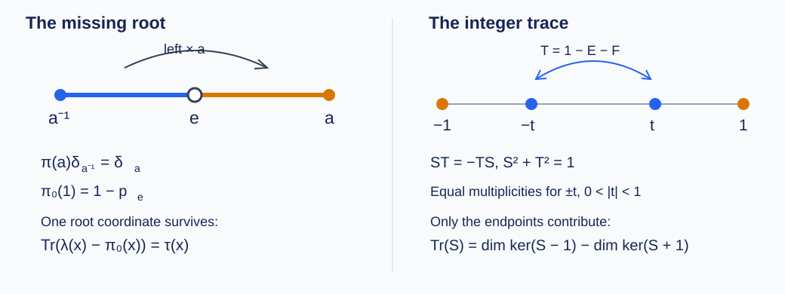

Free-tree representations and projections
The reduced C*-algebra of the free group on two generators has no projections other than zero and its identity. We prove this by comparing the action on vertices of a tree with its action on edges. Their discrepancy has trace one at the root. A trace-class difference of projections has integral trace, whereas a nontrivial projection would have trace strictly between zero and one.
We use the reduced-word construction in Residual subgroups and group-factor estimates, OA-MOD-RSG-01, and continuous functional calculus in Bounded operator kernel, OA-MOD-BK-01. The following earlier programme lessons supply the analytic tools, with proofs:
- Compact and trace-class operators, §§2–4: compactness, the trace ideal, its completeness and ideal estimates, and the absolutely convergent diagonal formula for the trace.
- Hilbert spaces and compact operators, §6: the compact self-adjoint spectral theorem.
- Banach algebras and holomorphic functional calculus, §§2, 4 and 6: the Neumann series, resolvents and the contour calculus in a unital Banach algebra.
- Cauchy's theorem for cycles, §§2–6: Cauchy's formula, cycles surrounding compact sets and Banach-valued contour integration.
For a Hilbert space \(K\), write \(\mathcal S_1(K)\) for its trace-class operators. The tools just named give
\[ \|T\|\leq\|T\|_1,\qquad \|BTC\|_1\leq\|B\|\|T\|_1\|C\|, \qquad \|T^*\|_1=\|T\|_1. \]They also give completeness in \(\|\cdot\|_1\), compactness of every trace-class operator, and
\[ \operatorname{Tr}(T)=\sum_j\langle Te_j,e_j\rangle \]for every orthonormal basis, with absolute convergence. These are programme proof inputs throughout the argument.
Vertices, edges and the modified representation
Let \(G=\mathbb F(a,b)\), \(H=\ell^2(G)\), and
\[ H'=\ell^2(G\setminus\{e\}),\qquad \lambda(g)\delta_h=\delta_{gh},\qquad A=C_r^*(G)\subseteq B(H). \]Here \(A\) is the operator-norm closure of the group algebra in its left regular representation. We retain the notation \(\lambda(x)=x\) for its action on \(H\).
Use the right Cayley tree: the vertices are \(G\), and its undirected edges are
\[ \{q,qa\},\quad \{q,qb\}\qquad(q\in G). \]Deleting the last letter of a nonempty reduced word gives its parent. Every vertex is connected to \(e\) by successive deletions. A non-backtracking closed path would give a nonempty reduced word equal to \(e\), which reduced-word uniqueness excludes. Thus this graph is a tree. Each edge has one endpoint further from \(e\); sending that endpoint to its parent edge defines a bijection
\[ \phi:G\setminus\{e\}\longrightarrow\{ ext{undirected edges}\}. \]Each edge is uniquely \(\{q,qs\}\) with \(s\in\{a,b\}\). Indeed, reversing the two endpoints would replace \(s\) by \(s^{-1}\), which is not a positive generator, and distinct generator labels cannot give the same edge. Left multiplication preserves this positive label. Consequently the edge set consists of two free transitive \(G\)-orbits.
Define a unitary
\[ U:H'\longrightarrow H\oplus H \]by sending the basis vector at a nonroot vertex to the basis vector indexed by the positive description \((q,s)\) of its parent edge; \(s\) selects the summand. Set
\[ \pi(g)=U^*(\lambda(g)\oplus\lambda(g))U. \]This is a unitary representation. For every group polynomial \(x\),
\[ \|\pi(x)\|=\|\lambda(x)\oplus\lambda(x)\|=\|x\|. \]It therefore extends by completion to an isometric unital *-representation \(\pi:A\to B(H')\).
For either \(s=a\) or \(s=b\), its formula is
\[ \begin{aligned} \pi(s)\delta_g&=\delta_{sg} &&\bigl(g\in G\setminus\{e,s^{-1}\}\bigr),\\ \pi(s)\delta_{s^{-1}}&=\delta_s. \end{aligned} \]To check it, translation of the parent edge of \(g\) is the parent edge of \(sg\) whenever adding or cancelling the first letter leaves the last-letter deletion intact. This includes words of length at least two, and words of length one other than \(s^{-1}\). For \(g=s^{-1}\), the edge \(\{s^{-1},e\}\) translates to \(\{e,s\}\), whose nonroot endpoint is \(s\). These cases exhaust the domain. In particular, the same formula includes both unchanged cross-generator cases. \(\square\)

Left panel: left multiplication by \(a\) sends the parent edge of \(a^{-1}\) to that of \(a\); the root is absent from the vertex model for \(H'\). Right panel: the operator \(1-E-F\) pairs the \(t\) and \(-t\) eigenspaces when \(0<|t|<1\); only the endpoint multiplicities contribute to the trace. These are the constructions of OA-MOD-FPI-01 and OA-MOD-FPI-05.
Finite-rank representation differences
On \(H=\mathbb C\delta_e\oplus H'\), put
\[ \pi_0(x)=0\oplus\pi(x),\qquad D(x)=\lambda(x)-\pi_0(x). \]The representation \(\pi_0\) is nonunital. If \(p_e\) projects onto \(\mathbb C\delta_e\), then
\[ \pi_0(1)=1-p_e,\qquad D(1)=p_e. \]For a positive generator \(s\), the preceding formulas give
\[ \begin{aligned} D(s)\delta_e&=\delta_s,\\ D(s)\delta_{s^{-1}}&=\delta_e-\delta_s,\\ D(s)\delta_g&=0&&\bigl(g\notin\{e,s^{-1}\}\bigr). \end{aligned} \]Thus \(D(s)\) has rank at most two. Also \(D(x^*)=D(x)^*\), so the inverse generators have finite-rank differences. Direct expansion gives, for all \(x,y\in A\),
\[ D(xy)=\lambda(x)D(y)+D(x)\pi_0(y). \]Induction on word length, including \(D(1)=p_e\), shows that \(D(g)\) is finite rank for every \(g\in G\). Finite linear combinations show the same for every group polynomial. \(\square\)
The trace-difference algebra and its projections
Define
\[ A_0=\{x\in A:D(x)\in\mathcal S_1(H)\},\qquad \|x\|_0=\|x\|+\|D(x)\|_1. \]This is a dense unital *-subalgebra of \(A\), complete in its displayed submultiplicative norm. It is also closed under the holomorphic functional calculus of \(A\).
Proof. The trace ideal is a vector space, and the product formula and ideal bound imply
\[ \begin{aligned} \|D(xy)\|_1 &\leq\|x\|\|D(y)\|_1+\|D(x)\|_1\|y\|,\\ \|xy\|_0&\leq\|x\|_0\|y\|_0. \end{aligned} \]The adjoint identity gives *-closure and \(\|x^*\|_0=\|x\|_0\). The finite-rank result puts the group algebra, including \(1\), in \(A_0\), proving operator-norm density. Its unit has \(\|1\|_0=2\); a unital Banach algebra need not have a normalized unit norm for the contour calculus.
If \((x_n)\) is Cauchy in \(\|\cdot\|_0\), then \(x_n\to x\) in \(A\) and \(D(x_n)\to T\) in trace norm for some \(T\in\mathcal S_1(H)\). Since trace norm dominates operator norm and
\[ \|D(x_n)-D(x)\|\leq2\|x_n-x\|, \]we have \(T=D(x)\). Thus \(x\in A_0\) and \(x_n\to x\) in the graph norm.
Suppose \(x\in A_0\) is invertible in \(A\). Applying the product identity to \(xx^{-1}=1\) and multiplying on the left by \(\lambda(x^{-1})\) gives
\[ \begin{aligned} D(x^{-1})={}&\lambda(x^{-1})p_e\\ &-\lambda(x^{-1})D(x)\pi_0(x^{-1}). \end{aligned} \]Both terms are trace class, so \(x^{-1}\in A_0\). The first term is essential because \(\pi_0\) is nonunital. Since the inclusion \(A_0\subseteq A\) is unital, this proves
\[ \sigma_{A_0}(x)=\sigma_A(x)\qquad(x\in A_0). \]Let \(f\) be holomorphic on an open neighbourhood \(V\) of this common compact spectrum. The surrounding-cycle theorem gives a finite piecewise smooth cycle \(\gamma\) in \(V\setminus\sigma_A(x)\), with index one on the spectrum and zero off \(V\). The resolvent is continuous in the \(A_0\) norm: near any resolvent point, expand its inverse by the Neumann series in the Banach algebra \(A_0\). Hence
\[ y=\frac1{2\pi i}\int_\gamma f(z)(z1-x)^{-1}\,dz \]exists in \(A_0\). Its continuous inclusion into \(A\) commutes with the integral, where the result is precisely \(f(x)\). The earlier contour-calculus proof supplies independence of the cycle and the unital algebra identities. Thus \(f(x)\in A_0\). \(\square\)
Projection consequence. If \(A\) has a nontrivial projection \(p\), then \(A_0\) has one.
Proof. Density and symmetrization give a self-adjoint group polynomial \(q\) with
\[ \|q-p\|<\varepsilon=\frac1{16}. \]The explicit resolvent of \(p\) is
\[ (z-p)^{-1}=z^{-1}(1-p)+(z-1)^{-1}p. \]For \(z\notin\{0,1\}\), its norm is the reciprocal of the distance to \(\{0,1\}\), since both orthogonal summands are nonzero. Factoring \(z-q\) using this inverse and a Neumann series proves that
\[ \sigma_A(q)\subseteq[-\varepsilon,\varepsilon] \ \cup\ [1-\varepsilon,1+\varepsilon]. \]Here self-adjointness makes the spectrum real by OA-MOD-BK-01. Take the positively oriented circle \(\gamma:|z-1|=1/2\), and put
\[ r=\frac1{2\pi i}\int_\gamma(z-q)^{-1}\,dz. \]Its resolvents belong to \(A_0\), continuously in graph norm, so \(r\in A_0\). In the continuous calculus of \(q\), the same integral is the function which is zero on the spectral cluster near zero and one on the cluster near one. Indeed, evaluation at each spectral point reduces the integral to the scalar circle Cauchy formula; uniform boundedness of the resolvents on the circle allows the continuous calculus to commute with the integral. The function is real and idempotent, so \(r=r^*=r^2\).
On this circle the resolvent bounds are
\[ \|(z-p)^{-1}\|=2,\qquad \|(z-q)^{-1}\|\leq\frac1{1/2-\varepsilon}. \]The resolvent identity and the circle length \(\pi\) therefore give
\[ \|r-p\| \leq\frac{\varepsilon}{1/2-\varepsilon} =\frac17<1. \]The integral of \((z-p)^{-1}\) is \(p\), directly from its displayed formula. Since a nontrivial projection has distance one from both \(0\) and \(1\), the bound excludes \(r=0\) and \(r=1\). \(\square\)
The canonical trace on the entire algebra
Define
\[ \tau(x)=\langle x\delta_e,\delta_e\rangle\qquad(x\in A). \]This is a normalized positive functional. It is tracial: for two group polynomials the coefficient at \(e\) in their product is \(\sum_g x_g y_{g^{-1}}\), unchanged by reversing the factors and reindexing. Continuity of multiplication and of \(\tau\) extends the identity to all \(A\).
It is faithful as well. The right translations
\[ \rho(h)\delta_g=\delta_{gh^{-1}} \]commute with every \(\lambda(k)\) and hence with every \(x\in A\). If \(\tau(x^*x)=\|x\delta_e\|^2=0\), then \(x\delta_e=0\). Commuting with \(\rho(g^{-1})\) gives \(x\delta_g=0\) for every \(g\), so \(x=0\). For a positive element, apply this conclusion to its square root, which belongs to \(A\) by OA-MOD-BK-01.
For every \(x\in A\), each diagonal entry \(\langle\lambda(x)\delta_g,\delta_g\rangle\) equals \(\tau(x)\). This follows by inspection for group polynomials, and then by norm continuity. Under \(U\), each basis vector of \(H'\) becomes a regular basis vector in one of two summands. Its diagonal entry for \(\pi(x)\) is therefore also \(\tau(x)\). Consequently
\[ \langle D(x)\delta_g,\delta_g\rangle =\begin{cases}\tau(x),&g=e,\\0,&g\ne e.\end{cases} \]If \(x\in A_0\), the trace-class diagonal formula applies and yields
\[ \boxed{\operatorname{Tr}(D(x))=\tau(x).} \]The coefficient argument applies to every element of \(A\), before the trace is taken. Thus the formula holds on all of \(A_0\); no density assertion in the graph norm is needed. \(\square\)
Integral trace for two projections
Let \(E,F\) be orthogonal projections on any Hilbert space \(K\), and suppose \(S=E-F\) is trace class. Then
\[ \operatorname{Tr}(E-F) =\dim\ker(S-1)-\dim\ker(S+1)\in\mathbb Z. \]Proof. Set \(T=1-E-F\). Multiplication using \(E^2=E\) and \(F^2=F\) gives
\[ ST=FE-EF=-TS,\qquad S^2+T^2=1. \]Both operators are self-adjoint. The second identity gives \(S^2\leq1\), so the spectrum of \(S\) lies in \([-1,1]\). Since \(S\) is compact, the compact self-adjoint spectral theorem expresses its nonzero spectral part as a finite or countable orthogonal sum of finite-dimensional eigenspaces, with eigenvalues tending to zero if there are infinitely many.
For \(0<|t|<1\), anticommutation makes \(T\) send \(\ker(S-t)\) into \(\ker(S+t)\). On either eigenspace, the other identity gives
\[ T^2=(1-t^2)1. \]Hence these two restrictions of \(T\) are bijections inverse to one another after division by \(1-t^2\). The multiplicities of \(t\) and \(-t\) agree. In an eigenbasis, completed by a basis of \(\ker S\), the trace-class diagonal formula is an absolutely convergent eigenvalue sum. Pairing the opposite interior eigenvalues is therefore legitimate and cancels their contributions. The kernel contributes zero. The eigenvalues \(1\) and \(-1\) have finite multiplicity by compactness, and give exactly the two dimensions in the formula. This also covers nonseparable \(K\), since only the nonzero spectral part contributes. \(\square\)
Absence of nontrivial projections
Theorem. The only projections in \(C_r^*(\mathbb F(a,b))\) are \(0\) and \(1\).
Proof. Suppose a nontrivial projection exists. OA-MOD-FPI-03 supplies a nontrivial projection \(r\in A_0\). The operators
\[ E=\lambda(r),\qquad F=\pi_0(r) \]are orthogonal projections, since both representations preserve multiplication and adjoints; unitality of \(\pi_0\) is unnecessary. Their difference is trace class by the definition of \(A_0\). OA-MOD-FPI-04 and OA-MOD-FPI-05 give
\[ \tau(r)=\operatorname{Tr}(E-F)\in\mathbb Z. \]But \(\tau\) is faithful and normalized. Applying faithfulness to the two nonzero positive elements \(r\) and \(1-r\) gives
\[ 0<\tau(r)<1, \]a contradiction. Both \(0\) and \(1\) are projections, proving the assertion. \(\square\)
The tree construction and its trace obstruction are discussed in A. Connes, Non-commutative differential geometry, Publications Mathématiques de l'IHÉS 62 (1985), Part I, §1, pp. 54–56, especially Lemma 6 and Corollary 7. Connes attributes the projectionlessness result to Pimsner and Voiculescu and the tree interpretation to Julg and Valette. The argument here supplies the representation, inverse-closed algebra, projection approximation, trace identity and spectral-pairing proofs explicitly.